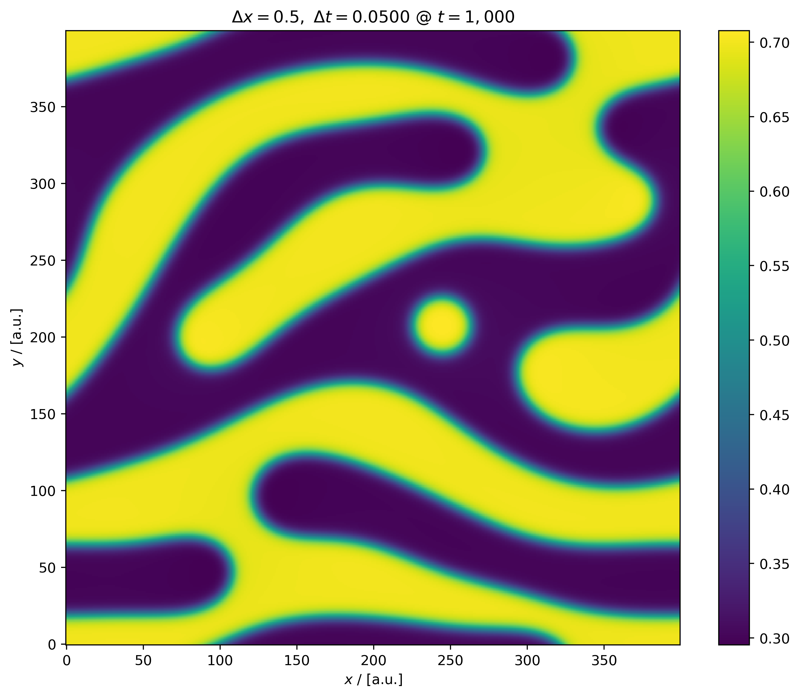

class: center, middle # Revisiting BM 1 Initial Conditions Trevor Keller, NIST [github.com/tkphd/pfhub-bm1-variations](https://github.com/tkphd/pfhub-bm1-variations) _CHiMaD Phase-Field Methods XV_ ??? > Press `C` to open a "clone", then `P` to toggle Presentation Mode. <!-- --> --- # Published I.C. features * Emulates random noise, but is deterministic _and easy to implement_. * Is neither _smooth_ nor _continuous_ on the periodic domain. * Neither is random noise. * Has valuable features: * A few prominent high- and low-`\(c\)` spots. * Trends, but no repeating patterns. * Evolves into a non-trivial microstructure. <img alt="PFHub BM1a t=50" src="../fig/original/c_00000050.png" width="32%" /> --- # Possible Improvements 1. Leave well enough alone. * `\(\nabla c\)` is _huge_ at the boundary: not a great starting point. 2. Replace `\(\cos\)` coefficients with even multiples of `\(\pi\)`. * Smooth & continuous; oversimplified? 3. Force `\(c\rightarrow ½\)` near the boundary. * Ugly solution, but smooth, continuous, and interesting. <img alt="PFHub BM1a variants" src="../fig/pfhub_bm1_ic_comparison.png" width="100%" /> --- # Possible Improvements 1. Leave well enough alone. * `\(\nabla c\)` is _huge_ at the boundary: not a great starting point. 2. Replace `\(\cos\)` coefficients with even multiples of `\(\pi\)`. * Smooth & continuous; oversimplified? 3. Force `\(c\rightarrow ½\)` near the boundary. * Ugly solution, but smooth, continuous, and interesting. .center[_Shifted FFTs highlight discontinuities_] --- # Published Formulation `\(\begin{align*} c = c_0 + &\varepsilon \left[\cos{\frac{21\, x}{L}}\cdot\cos{\frac{22\, y}{L}} + \left(\cos{\frac{26\, x}{L}}\cdot\cos{\frac{17.4\, y}{L}}\right)^2\right.\\ &+ \left.\cos{\left(\frac{5\, x}{L} - \frac{30\, y}{L}\right)}\cdot\cos{\left(\frac{14\, x}{L} - \frac{4\, y}{L}\right)}\right] \end{align*}\)` <img alt="PFHub BM1a t=100" src="../fig/original/c_00000100.png" width="32%" /> --- # Periodic I.C. `\(\begin{align*} c = c_0 + &\varepsilon \left[\cos{\frac{6\pi\, x}{L}}\cdot\cos{\frac{6\pi\, y}{L}} + \left(\cos{\frac{8\pi\, x}{L}}\cdot\cos{\frac{6\pi\, y}{L}}\right)^2\right.\\ &+ \left.\cos{\left(\frac{2\pi\, x}{L} - \frac{10\pi\, y}{L}\right)}\cdot\cos{\left(\frac{4\pi\, x}{L} - \frac{2\pi\, y}{L}\right)}\right] \end{align*}\)` <img alt="Periodic IC t=0" src="../fig/periodic/c_00000000.png" width="32%" /> <img alt="Periodic IC t=100" src="../fig/periodic/c_00000100.png" width="32%" /> <img alt="Periodic IC t=1,000" src="../fig/periodic/c_00001000.png" width="32%" /> --- # Tophat I.C. `\(\begin{align*} c = c_0 + \varepsilon & 🎩(x) 🎩(y) \left[\cos{\frac{21\, x}{L}}\cdot\cos{\frac{22\, y}{L}} + \left(\cos{\frac{26\, x}{L}}\cdot\cos{\frac{17.4\, y}{L}}\right)^2\right.\\ &+ \left.\cos{\left(\frac{5\, x}{L} - \frac{30\, y}{L}\right)}\cdot\cos{\left(\frac{14\, x}{L} - \frac{4\, y}{L}\right)}\right] \end{align*}\)`  `\(🎩(x) = \frac{1}{4} \left(1 + \tanh{\frac{\pi (x - w)}{w}}\right) \left(1 + \tanh{\frac{\pi (L - x - w)}{w}}\right)\)`